Södermalm i tid och rum
Skånegatan
Ur Kulturhus på Söder och Djurgården, Arne Eriksson, 1999
|
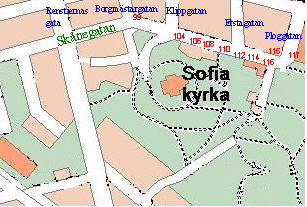 |
Skånegatan hette tidigare Nya gatan. Ett annat gammalt namn är Kvarngatan (Qwarngatan). Vid namnrevisionen 1885 blev Skånegatan namn på »den vidgade Nya gatan med dess förlängningar åt öster och vester«. |
{kind=link}
{kind=link}
|
Skånegatan 110
Under 1700-talet fanns på tomten en gård uppförd av skeppstimmermannen Mats Berg. Från slutet av århundradet och fram till 1877 står tomten obebyggd. Detta år uppför dåvarande ägaren muraren J. F. Åkerlind stenhuset som finns idag.
Skånegatan 108 Tomten uppläts 1724 till skeppstimmermannen Jöns Sundberg. Gathuset uppfördes omkring 1730. Enligt 1731 års mantalslängd bebor Sundberg egen gård tillsammans med sin gamla moder och en piga. År 1748 står varvstimmermannen Jonas Roos som ägare till »en liten instängd bergaktig gårdstomt med åbyggnad av en stuga och en bofällig bod«. Roos försäkrar sin gård 1753. Då finns förutom uthus och en brunn »en stuga och kammare vid gatan med vind över och torvtak samt farstukvist. Därunder är en bjälkkällare. På gården en stuga med vind och brädtak samt farstukvist, därunder är en bjälkkällare«. Mellan 1748 och 1753 har alltså gårdsstugan tillkommit. Även det östra gathuset uppfördes omkring 1730. På 1770-80-talet byggdes huset ut med en utan tillstånd uppförd bostadsdel. År 1860 genomgick de tre träbyggnaderna en grundlig reparation. Då tillkom också de två uthusen av sten. Enligt ägarlängderna för husen tycks de flesta ha varit sysselsatta vid det närliggande Södra varvet. Det finns flera skepps- eller varvstimmermän men också en kofferdisjöman, en vedbärare och en kanslist. |
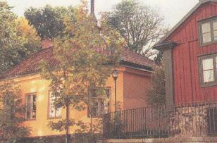  Bilden från NV Bilden från NV
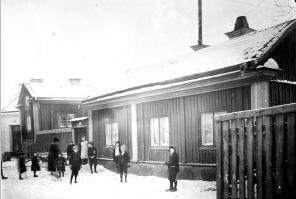 Skånegatan 108 år 1914. Bilden från NV. Nr 110 syns i vänstra kanten. |
|
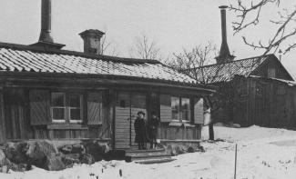  Skånegatan 106 år 1907. Bilden troligen från NV inne på gården
Skånegatan 106 år 1907. Bilden troligen från NV inne på gården
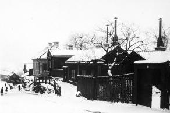 Skånegatan 106-108-110-112 år 1900. Längst ned mot öster syns nr 116. Bilden från NV. |
Skånegatan 106 Den träbyggnad som idag står på tomten uppfördes mellan 1726 och 1731 av åkaren Olof Göransson Hagberg. I anhållan till Ämbets- och Byggningscollegium hade Hagberg begärt att få »intaga och bebygga en liten plats längst ut på Södermalm, uti Sancta Catharina församling, utom kvarnarne emot trädgårdsmästare Peter Fagges trädgård uppå bergen«. Tomten uppläts som ofri den 30 juni 1726. I bouppteckningen efter Hagberg 1731 upptas »en liten ofri tomt bebyggd med en liten stuga samt ett stall«. En senare ägare var Johan Höglander - avskedad gardist, trädgårdsarbetare och sedermera järnbärare. År 1884 avled Höglander »som under en bortvandring sjuknat och i änklingsstånd avlidit å Linköpings länslasarett, 54 år gammal«. »Den avlidnes gångkläder anmäldes vara i så dålig beskaffenhet, att kostnader för deras transporterande till Stockholm skulle vida överstiga deras högst ringa värde.« Som enda tillgång uppges i bouppteckningen »hälften av en oförsäkrad träbyggning innehållande ett rum och kök«. Den andra hälften var sonens morsarv. Huset brandförsäkrades först år 1875 och värderades då till 1 000 kronor. |
|
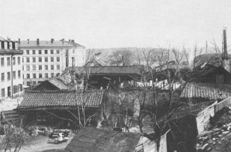  Kåkar i kvarteret Flintan på Vita Bergen österut vid Skånegatan.
Kåkar i kvarteret Flintan på Vita Bergen österut vid Skånegatan.I förgrunden fastigheten Skånegatan 106. |
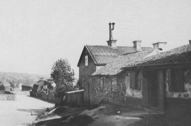  Skånegatan 112-116 österut mot Stora Mejtens gränd 1903.
Skånegatan 112-116 österut mot Stora Mejtens gränd 1903.
Bilden från NV |
|
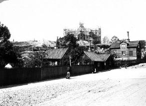 Skånegatan 114-112 år 1904. Närmast nr 114, till höger 112
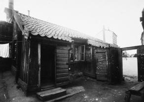 Skånegatan 114 in på gården 1906. Bilden mot NV.
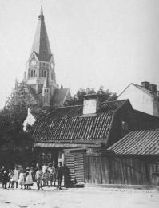  Erstagatan 32 vid hörnet av Skånegatan från NO. Till vänster framför Sofiakyrkan syns gaveln av Skånegatan 110. Foto 1905
Erstagatan 32 vid hörnet av Skånegatan från NO. Till vänster framför Sofiakyrkan syns gaveln av Skånegatan 110. Foto 1905
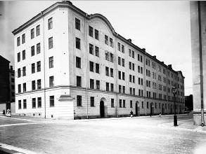 Hörnet Skånegatan 115 / Ploggatan 20 från SO. Bilden tagen 1920.
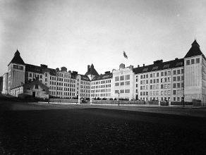 Skånegatan 117, Bondegatan 86, Sofia folkskola, från SO 1920.
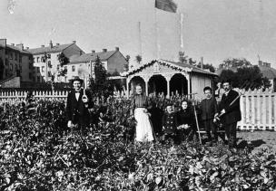  Kolonilotter vid Skånegatan 118. Bilden tagen från söder 1905.
Kolonilotter vid Skånegatan 118. Bilden tagen från söder 1905.Skånegatan går bakom staketet. Sofia folkskola är ännu ej byggd - inte heller Ploggatan 20-10. I bakgrunden till vänster syns baksidan av hus i hörnet Bondegatan 78 / Erstagatan 19. |
 Skånegatan 112-110 år 1906. Närmast nr 112, till höger 110
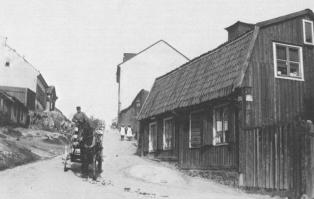  Skånegatan 109 till höger i kvarteret Hatten mot väster från Erstagatan. Till vänster gaveln av nr 110. Foto 1905
Skånegatan 109 till höger i kvarteret Hatten mot väster från Erstagatan. Till vänster gaveln av nr 110. Foto 1905
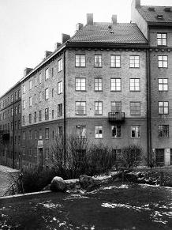 Hörnet Skånegatan 99 / Borgmästargatan 32 från söder. Bilden tagen tidigast 1922.
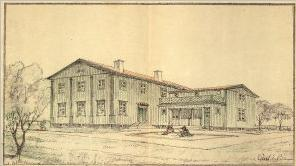  Skånegatan 116. Ritning från 1924. Förslag till barnkrubba,
Skånegatan 116. Ritning från 1924. Förslag till barnkrubba,barnavärn och arbetsstuga i Sofia församling. Perspektiv från gården.
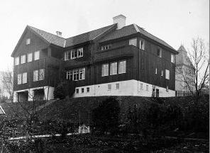 Skånegatan118. Sofia Husmoderskurs. Sedan 1941 barnhemmet Eurenii Ljungkrantz minne. Bilden tagen 1913 från SO. Sofia folkskola i bakgrunden.
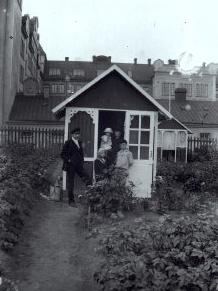 Skånegatan 118 från söder. I bakgrunden Sofia folkskola. Bilden tagen 1915. Lusthuset är en del av Barnängens koloniträdgårdsområde i kvarteret Stenkolet. |